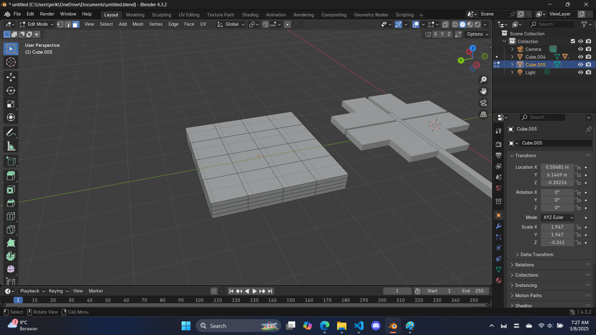

St. Patrick Objects - Part 2
"Are you getting a hang of this?"
The hat
Step 1: make a rectangle, again
this is just repetition from previous page, all you need to do is make a "kinda" flat rectangle by adding a cube and scale it.
Step 2: subdivide, twice
this should be straightforward, you need to make sure all the faces in the object are selected and right-click, subdivide, do it one more time, and your rectangle will have 16 faces on each side.
Step 3: more extruding
select the 4 faces in the center and extrude, you can make your hat as tall as you wish, make sure it is tall enough because there need to have that, "yellow belt" thingy around it.
Next, press 'alt + left click' on the direction of the face, this let's you quickly select all faces at a direction, then subdivide twice. This video shown will explain it visually:
The next step is to extrude the highlighted section in the video to create a simple yellow belt, to do this, make sure the faces are highlighted and press 'E' to extrude, notice how it won't extrude the way you want (it won't puff out), press 'S' so it will extrude along normal (it will puff out)
finally, you need to extrude the two faces in the center, as well as the two faces at the bottom
"I can't click on the bottom part it too hard!"
It requires precision and patience, perhaps turning on the x-ray mode will help you click the bottom part, if you still can't that's fine, it doesn't have to be perfect, just needs to be belivable.